Chapter 12: Mendel's Experiments and Heredity¶
Introduction¶
Genetics is the study of heredity. Johann Gregor Mendel set the framework for genetics long before chromosomes or genes had been identified, at a time when meiosis was not well understood. Mendel selected a simple biological system and conducted methodical, quantitative analyses using large sample sizes. Because of Mendel’s work, the fundamental principles of heredity were revealed. We now know that genes, carried on chromosomes, are the basic functional units of heredity with the capability to be replicated, expressed, or mutated. Today, the postulates put forth by Mendel form the basis of classical, or Mendelian, genetics. Not all traits are transmitted from parents to offspring according to Mendelian genetics, but Mendel’s experiments serve as an excellent starting point for thinking about inheritance.
12.1 Mendel’s Experiments and the Laws of Probability¶
Learning Objectives
By the end of this section, you will be able to do the following:
- Describe the scientific reasons for the success of Mendel’s experimental work
- Describe the expected outcomes of monohybrid crosses involving dominant and recessive alleles
- Apply the sum and product rules to calculate probabilities
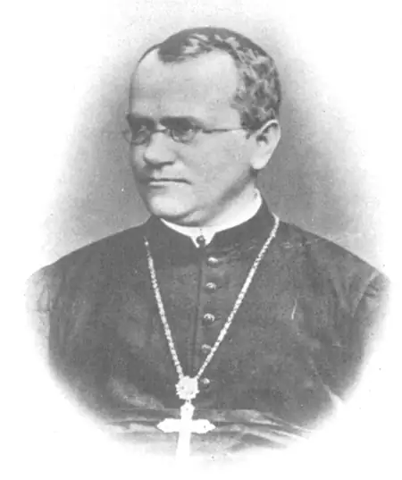
Johann Gregor Mendel (1822–1884) (Figure 12.2) was a lifelong learner, teacher, scientist, and man of faith. As a young adult, he joined the Augustinian Abbey of St. Thomas in Brno in what is now the Czech Republic. Supported by the monastery, he taught physics, botany, and natural science courses at the secondary and university levels. In 1856, he began a decade-long research pursuit involving inheritance patterns in honeybees and plants, ultimately settling on pea plants as his primary model system (a system with convenient characteristics used to study a specific biological phenomenon to be applied to other systems). In 1865, Mendel presented the results of his experiments with nearly 30,000 pea plants to the local Natural History Society. He demonstrated that traits are transmitted from parents to offspring independently of other traits and in dominant and recessive patterns. In 1866, he published his work, Experiments in Plant Hybridization,1 in the proceedings of the Natural History Society of Brünn.
Mendel’s work went virtually unnoticed by the scientific community, which believed, incorrectly, that the process of inheritance involved a blending of parental traits that produced an intermediate physical appearance in offspring. The blending theory of inheritance asserted that the original parental traits were lost or absorbed by the blending in the offspring, but we now know that this is not the case. This hypothetical process appeared to be correct because of what we know now as continuous variation. Continuous variation results from the action of many genes to determine a characteristic like human height. Offspring appear to be a “blend” of their parents’ traits.
Instead of continuous characteristics, Mendel worked with traits that were inherited in distinct classes (specifically, violet versus white flowers); this is referred to as discontinuous variation. Mendel’s choice of these kinds of traits allowed him to see experimentally that the traits were not blended in the offspring, nor were they absorbed, but rather that they kept their distinctness and could be passed on. In 1868, Mendel became abbot of the monastery and exchanged his scientific pursuits for his pastoral duties. He was not recognized for his extraordinary scientific contributions during his lifetime. In fact, it was not until 1900 that his work was rediscovered, reproduced, and revitalized by scientists on the brink of discovering the chromosomal basis of heredity.
Mendel’s Model System¶
Mendel’s seminal work was accomplished using the garden pea, Pisum sativum, to study inheritance. This species naturally self-fertilizes, such that pollen encounters ova within individual flowers. The flower petals remain sealed tightly until after pollination, preventing pollination from other plants. The result is highly inbred, or “true-breeding,” pea plants. These are plants that always produce offspring that look like the parent. By experimenting with true-breeding pea plants, Mendel avoided the appearance of unexpected traits in offspring that might occur if the plants were not true breeding. The garden pea also grows to maturity within one season, meaning that several generations could be evaluated over a relatively short time. Finally, large quantities of garden peas could be cultivated simultaneously, allowing Mendel to conclude that his results did not come about simply by chance.
Mendelian Crosses¶
Mendel performed hybridizations, which involve mating two true-breeding individuals that have different traits. In the pea, which is naturally self-pollinating, this is done by manually transferring pollen from the anther of a mature pea plant of one variety to the stigma of a separate mature pea plant of the second variety. In plants, pollen carries the male gametes (sperm) to the stigma, a sticky organ that traps pollen and allows the sperm to move down the pistil to the female gametes (ova) below. To prevent the pea plant that was receiving pollen from self-fertilizing and confounding his results, Mendel painstakingly removed all of the anthers from the plant’s flowers before they had a chance to mature.
Plants used in first-generation crosses were called P0, or parental generation one (Figure 12.3). After each cross, Mendel collected the seeds belonging to the P0 plants and grew them the following season. These offspring were called the F1, or the first filial (filial = offspring, daughter or son) generation. Once Mendel examined the characteristics in the F1 generation of plants, he allowed them to self-fertilize naturally. He then collected and grew the seeds from the F1 plants to produce the F2, or second filial, generation. Mendel’s experiments extended beyond the F2 generation to the F3 and F4generations, and so on, but it was the ratio of characteristics in the P0−F1−F2 generations that were the most intriguing and became the basis for Mendel’s postulates.
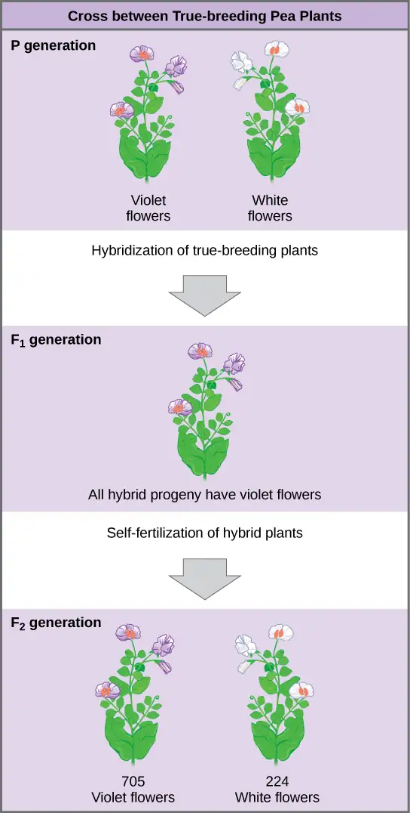
Garden Pea Characteristics Revealed the Basics of Heredity¶
In his 1865 publication, Mendel reported the results of his crosses involving seven different characteristics, each with two contrasting traits. A trait is defined as a variation in the physical appearance of a heritable characteristic. The characteristics included plant height, seed texture, seed color, flower color, pea pod size, pea pod color, and flower position. For the characteristic of flower color, for example, the two contrasting traits were white versus violet. To fully examine each characteristic, Mendel generated large numbers of F1and F2 plants, reporting results from 19,959 F2 plants alone. His findings were consistent.
What results did Mendel find in his crosses for flower color? First, Mendel confirmed that he had plants that bred true for white or violet flower color. Regardless of how many generations Mendel examined, all self-crossed offspring of parents with white flowers had white flowers, and all self-crossed offspring of parents with violet flowers had violet flowers. In addition, Mendel confirmed that, other than flower color, the pea plants were physically identical.
Once these validations were complete, Mendel applied the pollen from a plant with violet flowers to the stigma of a plant with white flowers. After gathering and sowing the seeds that resulted from this cross, Mendel found that 100 percent of the F1 hybrid generation had violet flowers. Conventional wisdom at that time (the blending theory) would have predicted the hybrid flowers to be pale violet or for hybrid plants to have equal numbers of white and violet flowers. In other words, the contrasting parental traits were expected to blend in the offspring. Instead, Mendel’s results demonstrated that the white flower trait in the F1 generation had completely disappeared.
Importantly, Mendel did not stop his experimentation there. He allowed the F1 plants to self-fertilize and found that, of F2-generation plants, 705 had violet flowers and 224 had white flowers. This was a ratio of 3.15 violet flowers per one white flower, or approximately 3:1. When Mendel transferred pollen from a plant with violet flowers to the stigma of a plant with white flowers and vice versa, he obtained about the same ratio regardless of which parent, male or female, contributed which trait. This is called a reciprocal cross—a paired cross in which the respective traits of the male and female in one cross become the respective traits of the female and male in the other cross. For the other six characteristics Mendel examined, the F1 and F2 generations behaved in the same way as they had for flower color. One of the two traits would disappear completely from the F1 generation only to reappear in the F2 generation at a ratio of approximately 3:1 (Table 12.1).
Table 12.1
| The Results of Mendel’s Garden Pea Hybridizations | ||||
|---|---|---|---|---|
| Characteristic | Contrasting P0 Traits | F1 Offspring Traits | F2 Offspring Traits | F2 Trait Ratios |
| Flower color | Violet vs. white | 100 percent violet | • 705 violet • 224 white |
3.15:1 |
| Flower position | Axial vs. terminal | 100 percent axial | • 651 axial • 207 terminal |
3.14:1 |
| Plant height | Tall vs. dwarf | 100 percent tall | • 787 tall • 277 dwarf |
2.84:1 |
| Seed texture | Round vs. wrinkled | 100 percent round | • 5,474 round • 1,850 wrinkled |
2.96:1 |
| Seed color | Yellow vs. green | 100 percent yellow | • 6,022 yellow • 2,001 green |
3.01:1 |
| Pea pod texture | Inflated vs. constricted | 100 percent inflated | • 882 inflated • 299 constricted |
2.95:1 |
| Pea pod color | Green vs. yellow | 100 percent green | • 428 green • 152 yellow |
2.82:1 |
Upon compiling his results for many thousands of plants, Mendel concluded that the characteristics could be divided into expressed and latent traits. He called these, respectively, dominant and recessive traits. Dominant traits are those that are inherited unchanged in a hybridization. Recessive traits become latent, or disappear, in the offspring of a hybridization. The recessive trait does, however, reappear in the progeny of the hybrid offspring. An example of a dominant trait is the violet-flower trait. For this same characteristic (flower color), white-colored flowers are a recessive trait. The fact that the recessive trait reappeared in the F2 generation meant that the traits remained separate (not blended) in the plants of the F1 generation. Mendel also proposed that plants possessed two copies of the trait for the flower-color characteristic, and that each parent transmitted one of its two copies to its offspring, where they came together. Moreover, the physical observation of a dominant trait could mean that the genetic composition of the organism included two dominant versions of the characteristic or that it included one dominant and one recessive version. Conversely, the observation of a recessive trait meant that the organism lacked any dominant versions of this characteristic.
So why did Mendel repeatedly obtain 3:1 ratios in his crosses? To understand how Mendel deduced the basic mechanisms of inheritance that lead to such ratios, we must first review the laws of probability.
Probability Basics¶
Probabilities are mathematical measures of likelihood. The empirical probability of an event is calculated by dividing the number of times the event occurs by the total number of opportunities for the event to occur. It is also possible to calculate theoretical probabilities by dividing the number of times that an event is expected to occur by the number of times that it could occur. Empirical probabilities come from observations, like those of Mendel. Theoretical probabilities, on the other hand, come from knowing how the events are produced and assuming that the probabilities of individual outcomes are equal. A probability of one for some event indicates that it is guaranteed to occur, whereas a probability of zero indicates that it is guaranteed not to occur. An example of a genetic event is a round seed produced by a pea plant.
In one experiment, Mendel demonstrated that the probability of the event “round seed” occurring was one in the F1 offspring of true-breeding parents, one of which has round seeds and one of which has wrinkled seeds. When the F1 plants were subsequently self-crossed, the probability of any given F2 offspring having round seeds was now three out of four. In other words, in a large population of F2 offspring chosen at random, 75 percent were expected to have round seeds, whereas 25 percent were expected to have wrinkled seeds. Using large numbers of crosses, Mendel was able to calculate probabilities and use these to predict the outcomes of other crosses.
The Product Rule and Sum Rule¶
Mendel demonstrated that pea plants transmit characteristics as discrete units from parent to offspring. As will be discussed, Mendel also determined that different characteristics, like seed color and seed texture, were transmitted independently of one another and could be considered in separate probability analyses. For instance, performing a cross between a plant with green, wrinkled seeds and a plant with yellow, round seeds still produced offspring that had a 3:1 ratio of yellow:green seeds (ignoring seed texture) and a 3:1 ratio of wrinkled:round seeds (ignoring seed color). The characteristics of color and texture did not influence each other.
The product rule of probability can be applied to this phenomenon of the independent transmission of characteristics. The product rule states that the probability of two independent events occurring together can be calculated by multiplying the individual probabilities of each event occurring alone. To demonstrate the product rule, imagine that you are rolling a six-sided die (D) and flipping a penny (P) at the same time. The die may roll any number from 1–6 (D#), whereas the penny may turn up heads (PH) or tails (PT). The outcome of rolling the die has no effect on the outcome of flipping the penny and vice versa. There are 12 possible outcomes of this action (Table 12.2), and each event is expected to occur with equal probability.
Table 12.2
| Twelve Equally Likely Outcomes of Rolling a Die and Flipping a Penny | |
|---|---|
| Rolling Die | Flipping Penny |
| D1 | PH |
| D1 | PT |
| D2 | PH |
| D2 | PT |
| D3 | PH |
| D3 | PT |
| D4 | PH |
| D4 | PT |
| D5 | PH |
| D5 | PT |
| D6 | PH |
| D6 | PT |
Of the 12 possible outcomes, the die has a 2/12 (or 1/6) probability of rolling a two, and the penny has a 6/12 (or 1/2) probability of coming up heads. By the product rule, the probability that you will obtain the combined outcome 2 and heads is: (D2) x (PH) = (1/6) x (1/2) or 1/12 (Table 12.3). Notice the word “and” in the description of the probability. The “and” is a signal to apply the product rule. For example, consider how the product rule is applied to the dihybrid cross: the probability of having both dominant traits (for example, yellow and round) in the F2 progeny is the product of the probabilities of having the dominant trait for each characteristic, as shown here:
On the other hand, the sum rule of probability is applied when considering two mutually exclusive outcomes that can come about by more than one pathway. The sum rule states that the probability of the occurrence of one event or the other event, of two mutually exclusive events, is the sum of their individual probabilities. Notice the word “or” in the description of the probability. The “or” indicates that you should apply the sum rule. In this case, let’s imagine you are flipping a penny (P) and a quarter (Q). What is the probability of one coin coming up heads and one coin coming up tails? This outcome can be achieved by two cases: the penny may be heads (PH) and the quarter may be tails (QT), or the quarter may be heads (QH) and the penny may be tails (PT). Either case fulfills the outcome. By the sum rule, we calculate the probability of obtaining one head and one tail as [(PH) × (QT)] + [(QH) × (PT)] = [(1/2) × (1/2)] + [(1/2) × (1/2)] = 1/2 (Table 12.3). You should also notice that we used the product rule to calculate the probability of PH and QT, and also the probability of PT and QH, before we summed them. Again, the sum rule can be applied to show the probability of having exactly one dominant trait in the F2 generation of a dihybrid cross:
Table 12.3
| The Product Rule and Sum Rule | |
|---|---|
| Product Rule | Sum Rule |
| For independent events A and B, the probability (P) of them both occurring (A and B) is (PA × PB) | For mutually exclusive events A and B, the probability (P) that at least one occurs (A or B) is (PA + PB) |
To use probability laws in practice, we must work with large sample sizes because small sample sizes are prone to deviations caused by chance. The large quantities of pea plants that Mendel examined allowed him to calculate the probabilities of the traits appearing in his F2 generation. As you will learn, this discovery meant that when parental traits were known, the offspring’s traits could be predicted accurately even before fertilization.
12.2 Characteristics and Traits¶
Learning Objectives
By the end of this section, you will be able to do the following:
- Explain the relationship between genotypes and phenotypes in dominant and recessive gene systems
- Develop a Punnett square to calculate the expected proportions of genotypes and phenotypes in a monohybrid cross
- Explain the purpose and methods of a test cross
- Identify non-Mendelian inheritance patterns such as incomplete dominance, codominance, recessive lethals, multiple alleles, and sex linkage
Physical characteristics are expressed through genes carried on chromosomes. The genetic makeup of peas consists of two similar, or homologous, copies of each chromosome, one from each parent. Each pair of homologous chromosomes has the same linear order of genes. In other words, peas are diploid organisms in that they have two copies of each chromosome. The same is true for many other plants and for virtually all animals. Diploid organisms produce haploid gametes, which contain one copy of each homologous chromosome that unite at fertilization to create a diploid zygote.
For cases in which a single gene controls a single characteristic, a diploid organism has two genetic copies that may or may not encode the same version of that characteristic. Gene variants that arise by mutation and exist at the same relative locations on homologous chromosomes are called alleles. Mendel examined the inheritance of genes with just two allele forms, but it is common to encounter more than two alleles for any given gene in a natural population.
Phenotypes and Genotypes¶
Two alleles for a given gene in a diploid organism are expressed and interact to produce physical characteristics. The observable traits expressed by an organism are referred to as its phenotype. An organism’s underlying genetic makeup, consisting of both physically visible and non-expressed alleles, is called its genotype. Mendel’s hybridization experiments demonstrate the difference between phenotype and genotype. When true-breeding plants in which one parent had yellow pods and one had green pods were cross-fertilized, all of the F1 hybrid offspring had yellow pods. That is, the hybrid offspring were phenotypically identical to the true-breeding parent with yellow pods. However, we know that the allele donated by the parent with green pods was not simply lost because it reappeared in some of the F2 offspring. Therefore, the F1 plants must have been genotypically different from the parent with yellow pods.
The P1 plants that Mendel used in his experiments were each homozygous for the trait he was studying. Diploid organisms that are homozygous at a given gene, or locus, have two identical alleles for that gene on their homologous chromosomes. Mendel’s parental pea plants always bred true because both of the gametes produced carried the same trait. When P1 plants with contrasting traits were cross-fertilized, all of the offspring were heterozygous for the contrasting trait, meaning that their genotype reflected that they had different alleles for the gene being examined.
Dominant and Recessive Alleles¶
Our discussion of homozygous and heterozygous organisms brings us to why the F1 heterozygous offspring were identical to one of the parents, rather than expressing both alleles. In all seven pea-plant characteristics, one of the two contrasting alleles was dominant, and the other was recessive. Mendel called the dominant allele the expressed unit factor; the recessive allele was referred to as the latent unit factor. We now know that these so-called unit factors are actually genes on homologous chromosome pairs. For a gene that is expressed in a dominant and recessive pattern, homozygous dominant and heterozygous organisms will look identical (that is, they will have different genotypes but the same phenotype). The traits of the recessive allele will only be observed in homozygous recessive individuals (Table 12.4).
Table 12.4
| Human Inheritance in Dominant and Recessive Patterns | |
|---|---|
| Dominant Traits | Recessive Traits |
| Achondroplasia | Albinism |
| Brachydactyly | Cystic fibrosis |
| Huntington’s disease | Duchenne muscular dystrophy |
| Marfan syndrome | Galactosemia |
| Neurofibromatosis | Phenylketonuria |
| Widow’s peak | Sickle-cell anemia |
| Wooly hair | Tay-Sachs disease |
Several conventions exist for referring to genes and alleles. For the purposes of this chapter, we will abbreviate genes using the first letter of the gene’s corresponding dominant trait. For example, violet is the dominant trait for a pea plant’s flower color, so the flower-color gene would be abbreviated as V (note that it is customary to italicize gene designations). Furthermore, we will use uppercase and lowercase letters to represent dominant and recessive alleles, respectively. Therefore, we would refer to the genotype of a homozygous dominant pea plant with violet flowers as VV, a homozygous recessive pea plant with white flowers as vv, and a heterozygous pea plant with violet flowers as Vv.
The Punnett Square Approach for a Monohybrid Cross¶
When fertilization occurs between two true-breeding parents that differ in only one characteristic, the process is called a monohybrid cross, and the resulting offspring are monohybrids. Mendel performed seven monohybrid crosses involving contrasting traits for each characteristic. On the basis of his results in F1 and F2 generations, Mendel postulated that each parent in the monohybrid cross contributed one of two paired unit factors to each offspring, and every possible combination of unit factors was equally likely.
To demonstrate a monohybrid cross, consider the case of true-breeding pea plants with yellow versus green pea seeds. The dominant seed color is yellow; therefore, the parental genotypes were YY for the plants with yellow seeds and yy for the plants with green seeds, respectively. A Punnett square, devised by the British geneticist Reginald Punnett, can be drawn that applies the rules of probability to predict the possible outcomes of a genetic cross or mating and their expected frequencies. To prepare a Punnett square, all possible combinations of the parental alleles are listed along the top (for one parent) and side (for the other parent) of a grid, representing their meiotic segregation into haploid gametes. Then the combinations of egg and sperm are made in the boxes in the table to show which alleles are combining. Each box then represents the diploid genotype of a zygote, or fertilized egg, that could result from this mating. Because each possibility is equally likely, genotypic ratios can be determined from a Punnett square. If the pattern of inheritance (dominant or recessive) is known, the phenotypic ratios can be inferred as well. For a monohybrid cross of two true-breeding parents, each parent contributes one type of allele. In this case, only one genotype is possible. All offspring are Yy and have yellow seeds (Figure 12.4).
![This illustration shows a monohybrid cross. In the upper P generation, one parent has a dominant yellow phenotype and the genotype upper Y upper Y, and the other parent has the recessive green phenotype and the genotype lower y lower y. Each parent produces one kind of gamete, resulting in an upper F subscript 1 baseline generation with a dominant yellow phenotype and the genotype upper Y lower y. Self-pollination of the upper F subscript 1 baseline generation results in an upper F subscript 2 baseline generation with a 3 to 1 ratio of yellow to green peas. One out of three of the yellow pea plants has a dominant genotype of upper Y upper Y, and 2 out of 3 have the heterozygous phenotype upper Y lower y. The homozygous recessive plant has the green phenotype and the genotype lower y lower y.](img/figure-12-02-02.webp)
A self-cross of one of the Yy heterozygous offspring can be represented in a 2 × 2 Punnett square because each parent can donate one of two different alleles. Therefore, the offspring can potentially have one of four allele combinations: YY, Yy, yY, or yy (Figure 12.4). Notice that there are two ways to obtain the Yy genotype: a Y from the egg and a y from the sperm, or a y from the egg and a Y from the sperm. Both of these possibilities must be counted. Recall that Mendel’s pea-plant characteristics behaved in the same way in reciprocal crosses. Therefore, the two possible heterozygous combinations produce offspring that are genotypically and phenotypically identical despite their dominant and recessive alleles deriving from different parents. They are grouped together. Because fertilization is a random event, we expect each combination to be equally likely and for the offspring to exhibit a ratio of YY:Yy:yy genotypes of 1:2:1 (Figure 12.4). Furthermore, because the YY and Yy offspring have yellow seeds and are phenotypically identical, applying the sum rule of probability, we expect the offspring to exhibit a phenotypic ratio of 3 yellow:1 green. Indeed, working with large sample sizes, Mendel observed approximately this ratio in every F2 generation resulting from crosses for individual traits.
Mendel validated these results by performing an F3 cross in which he self-crossed the dominant- and recessive-expressing F2 plants. When he self-crossed the plants expressing green seeds, all of the offspring had green seeds, confirming that all green seeds had homozygous genotypes of yy. When he self-crossed the F2 plants expressing yellow seeds, he found that one-third of the plants bred true, and two-thirds of the plants segregated at a 3:1 ratio of yellow:green seeds. In this case, the true-breeding plants had homozygous (YY) genotypes, whereas the segregating plants corresponded to the heterozygous (Yy) genotype. When these plants self-fertilized, the outcome was just like the F1 self-fertilizing cross.
The Test Cross Distinguishes the Dominant Phenotype¶
Beyond predicting the offspring of a cross between known homozygous or heterozygous parents, Mendel also developed a way to determine whether an organism that expressed a dominant trait was a heterozygote or a homozygote. Called the test cross, this technique is still used by plant and animal breeders. In a test cross, the dominant-expressing organism is crossed with an organism that is homozygous recessive for the same characteristic. If the dominant-expressing organism is a homozygote, then all F1 offspring will be heterozygotes expressing the dominant trait (Figure 12.5). Alternatively, if the dominant expressing organism is a heterozygote, the F1 offspring will exhibit a 1:1 ratio of heterozygotes and recessive homozygotes (Figure 12.5). The test cross further validates Mendel’s postulate that pairs of unit factors segregate equally.
Visual Connection
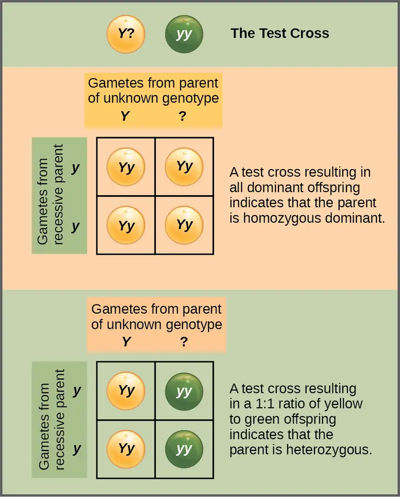
In pea plants, round peas (R) are dominant to wrinkled peas (r). You do a test cross between a pea plant with wrinkled peas (genotype rr) and a plant of unknown genotype that has round peas. You end up with three plants, all which have round peas. From this data, can you tell if the round pea parent plant is homozygous dominant or heterozygous? If the round pea parent plant is heterozygous, what is the probability that a random sample of 3 progeny peas will all be round?
Many human diseases are genetically inherited. A healthy person in a family in which some members suffer from a recessive genetic disorder may want to know if they have the disease-causing gene and what risk exists of passing the disorder on to their offspring. Of course, doing a test cross in humans is unethical and impractical. Instead, geneticists use pedigree analysis to study the inheritance pattern of human genetic diseases (Figure 12.6).
Visual Connection
![This is a pedigree of a family that carries the recessive disorder alkaptonuria. In the second generation, an unaffected mother and an affected father have three children. One child has the disorder, so the genotype of the mother must be upper case A lower case a, and the genotype of the father is lower case a lower case a. One unaffected child goes on to have two children, one affected and one unaffected. Because her husband was not affected, she and her husband must both be heterozygous. The genotype of their unaffected child is unknown, and is designated upper A question mark. In the third generation, the other unaffected child had no offspring. The affected third-generation child goes on to have one child with the disorder. Her husband is unaffected and is labeled 3. The first generation father is affected and is labeled 1; The first generation mother is unaffected and is labeled 2 The Visual Connection question asks the genotype of the three numbered individuals.](img/figure-12-02-11.webp)
What are the genotypes of the individuals labeled 1, 2, and 3?
Alternatives to Dominance and Recessiveness¶
Mendel’s experiments with pea plants suggested that: (1) two “units” or alleles exist for every gene; (2) alleles maintain their integrity in each generation (no blending); and (3) in the presence of the dominant allele, the recessive allele is hidden and makes no contribution to the phenotype. Therefore, recessive alleles can be “carried” and not expressed by individuals. Such heterozygous individuals are sometimes referred to as “carriers.” Further genetic studies in other plants and animals have shown that much more complexity exists, but that the fundamental principles of Mendelian genetics still hold true. In the sections to follow, we consider some of the extensions of Mendelism. If Mendel had chosen an experimental system that exhibited these genetic complexities, it’s possible that he would not have understood what his results meant.
Incomplete Dominance¶
Mendel’s results, that traits are inherited as dominant and recessive pairs, contradicted the view at that time that offspring exhibited a blend of their parents’ traits. However, the heterozygote phenotype occasionally does appear to be intermediate between the two parents. For example, in the snapdragon, Antirrhinum majus (Figure 12.7), a cross between a homozygous parent with white flowers (CWCW) and a homozygous parent with red flowers (CRCR) will produce offspring with pink flowers (CRCW). (Note that different genotypic abbreviations are used for Mendelian extensions to distinguish these patterns from simple dominance and recessiveness.) This pattern of inheritance is described as incomplete dominance, denoting the expression of two contrasting alleles such that the individual displays an intermediate phenotype. The allele for red flowers is incompletely dominant over the allele for white flowers. However, the results of a heterozygote self-cross can still be predicted, just as with Mendelian dominant and recessive crosses. In this case, the genotypic ratio would be 1 CRCR:2 CRCW:1 CWCW, and the phenotypic ratio would be 1:2:1 for red:pink:white.
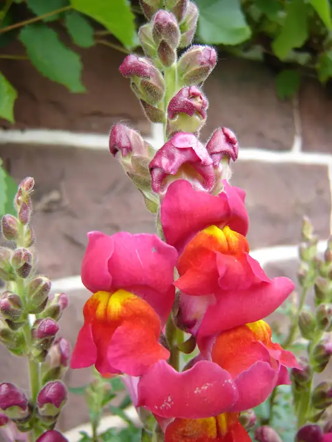
Codominance¶
A variation on incomplete dominance is codominance, in which both alleles for the same characteristic are simultaneously expressed in the heterozygote. An example of codominance is the MN blood groups of humans. The M and N alleles are expressed in the form of an M or N antigen present on the surface of red blood cells. Homozygotes (LMLM and LNLN) express either the M or the N allele, and heterozygotes (LMLN) express both alleles equally. In a self-cross between heterozygotes expressing a codominant trait, the three possible offspring genotypes are phenotypically distinct. However, the 1:2:1 genotypic ratio characteristic of a Mendelian monohybrid cross still applies.
Multiple Alleles¶
Mendel implied that only two alleles, one dominant and one recessive, could exist for a given gene. We now know that this is an oversimplification. Although individual humans (and all diploid organisms) can only have two alleles for a given gene, multiple alleles may exist at the population level such that many combinations of two alleles are observed. Note that when many alleles exist for the same gene, the convention is to denote the most common phenotype or genotype among wild animals as the wild type (often abbreviated “+”); this is considered the standard or norm. All other phenotypes or genotypes are considered variants of this standard, meaning that they deviate from the wild type. The variant may be recessive or dominant to the wild-type allele.
An example of multiple alleles is coat color in rabbits (Figure 12.8). Here, four alleles exist for the c gene. The wild-type version, C+C+, is expressed as brown fur. The chinchilla phenotype, cchcch, is expressed as black-tipped white fur. The Himalayan phenotype, chch, has black fur on the extremities and white fur elsewhere. Finally, the albino, or “colorless” phenotype, cc, is expressed as white fur. In cases of multiple alleles, dominance hierarchies can exist. In this case, the wild-type allele is dominant over all the others, chinchilla is incompletely dominant over Himalayan and albino, and Himalayan is dominant over albino. This hierarchy, or allelic series, was revealed by observing the phenotypes of each possible heterozygote offspring.
![This illustration shows the four different variants for coat color in rabbits at the c allele. The genotype upper case C upper case C produces the wild type phenotype, which is brown. The genotype lower case c superscript c h baseline lower case c superscript c h baseline produces the chinchilla phenotype, which is black-tipped white fur. The genotype lower case c superscript h baseline, lower case c superscript h baseline, produces the Himalayan phenotype, which is white on the body and black on the extremities. The genotype lower case c lower case c produces the recessive phenotype, which is white.](img/figure-12-02-05.webp)
The complete dominance of a wild-type phenotype over all other mutants often occurs as an effect of “dosage” of a specific gene product, such that the wild-type allele supplies the correct amount of gene product whereas the mutant alleles cannot. For the allelic series in rabbits, the wild-type allele may supply a given dosage of fur pigment, whereas the mutants supply a lesser dosage or none at all. Interestingly, the Himalayan phenotype is the result of an allele that produces a temperature-sensitive gene product that only produces pigment in the cooler extremities of the rabbit’s body.
Alternatively, one mutant allele can be dominant over all other phenotypes, including the wild type. This may occur when the mutant allele somehow interferes with the genetic message so that even a heterozygote with one wild-type allele copy expresses the mutant phenotype. One way in which the mutant allele can interfere is by enhancing the function of the wild-type gene product or changing its distribution in the body. One example of this is the Antennapedia mutation in Drosophila (Figure 12.9). In this case, the mutant allele expands the distribution of the gene product, and as a result, the Antennapedia heterozygote develops legs on its head where its antennae should be.
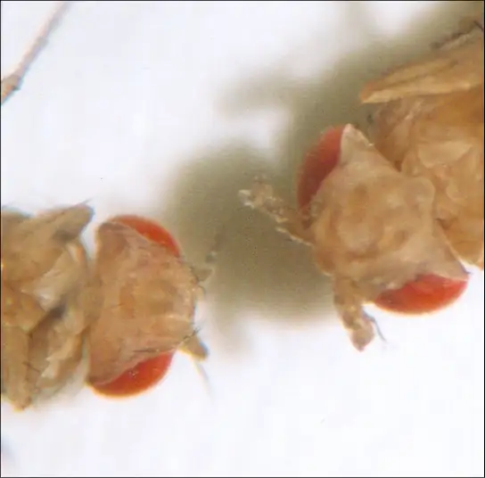
Evolution Connection: Multiple Alleles Confer Drug Resistance in the Malaria Parasite
Malaria is a parasitic disease in humans that is transmitted by infected female mosquitoes, including Anopheles gambiae (Figure 12.10a), and is characterized by cyclic high fevers, chills, flu-like symptoms, and severe anemia. Plasmodium falciparum and P. vivax are the most common causative agents of malaria, and P. falciparum is the most deadly (Figure 12.10b). When promptly and correctly treated, P. falciparum malaria has a mortality rate of 0.1 percent. However, in some parts of the world, the parasite has evolved resistance to commonly used malaria treatments, so the most effective malarial treatments can vary by geographic region.
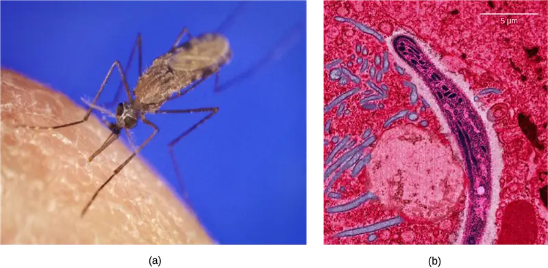
In Southeast Asia, Africa, and South America, P. falciparum has developed resistance to the anti-malarial drugs chloroquine, mefloquine, and sulfadoxine-pyrimethamine. P. falciparum, which is haploid during the life stage in which it is infectious to humans, has evolved multiple drug-resistant mutant alleles of the dhps gene. Varying degrees of sulfadoxine resistance are associated with each of these alleles. Being haploid, P. falciparum needs only one drug-resistant allele to express this trait.
In Southeast Asia, different sulfadoxine-resistant alleles of the dhps gene are localized to different geographic regions. This is a common evolutionary phenomenon that occurs because drug-resistant mutants arise in a population and interbreed with other P. falciparum isolates in close proximity. Sulfadoxine-resistant parasites cause considerable human hardship in regions where this drug is widely used as an over-the-counter malaria remedy. As is common with pathogens that multiply to large numbers within an infection cycle, P. falciparum evolves relatively rapidly (over a decade or so) in response to the selective pressure of commonly used anti-malarial drugs. For this reason, scientists must constantly work to develop new drugs or drug combinations to combat the worldwide malaria burden.2
X-Linked Traits¶
In humans, as well as in many other animals and some plants, the sex of the individual is determined by sex chromosomes. The sex chromosomes are one pair of non-homologous chromosomes. Until now, we have only considered inheritance patterns among non-sex chromosomes, or autosomes. In addition to 22 homologous pairs of autosomes, human females have a homologous pair of X chromosomes, whereas human males have an XY chromosome pair. Although the Y chromosome contains a small region of similarity to the X chromosome so that they can pair during meiosis, the Y chromosome is much shorter and contains many fewer genes. In fact, when Nettie Stevens discovered that the X and Y chromosomes were the determinants of sex, she differentiated them only by size. (Note that in this case and in the description below, the terms X and Y chromosome were not used at the time.) When a gene being examined is present on the X chromosome, but not on the Y chromosome, it is said to be X-linked.
Eye color in Drosophila was one of the first X-linked traits to be identified. Thomas Hunt Morgan mapped this trait to what became known as the X chromosome in 1910. Like humans, Drosophila males have an XY chromosome pair, and females are XX. In flies, the wild-type eye color is red (XW) and it is dominant to white eye color (Xw) (Figure 12.11). Because of the location of the eye-color gene, reciprocal crosses do not produce the same offspring ratios. Males are said to be hemizygous, because they have only one allele for any X-linked characteristic. Hemizygosity makes the descriptions of dominance and recessiveness irrelevant for XY males. Drosophila males lack a second allele copy on the Y chromosome; that is, their genotype can only be XWY or XwY. In contrast, females have two allele copies of this gene and can be XWXW, XWXw, or XwXw.
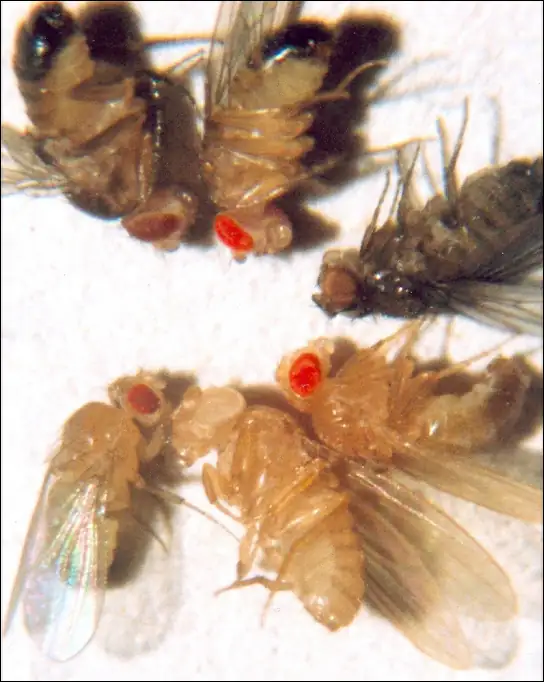
In an X-linked cross, the genotypes of F1 and F2 offspring depend on whether the recessive trait was expressed by the male or the female in the P1 generation. With regard to Drosophila eye color, when the P1 male expresses the white-eye phenotype and the female is homozygous red-eyed, all members of the F1 generation exhibit red eyes (Figure 12.12). The F1 females are heterozygous (XWXw), and the males are all XWY, having received their X chromosome from the homozygous dominant P1 female and their Y chromosome from the P1 male. A subsequent cross between the XWXw female and the XWY male would produce only red-eyed females (with XWXW or XWXw genotypes) and both red- and white-eyed males (with XWY or XwY genotypes). Now, consider a cross between a homozygous white-eyed female and a male with red eyes. The F1 generation would exhibit only heterozygous red-eyed females (XWXw) and only white-eyed males (XwY). Half of the F2 females would be red-eyed (XWXw) and half would be white-eyed (XwXw). Similarly, half of the F2 males would be red-eyed (XWY) and half would be white-eyed (XwY).
Visual Connection
![This illustration shows a Punnett square analysis of fruit fly eye color, which is a sex-linked trait. A red-eyed male fruit fly with the genotype X superscript upper case W baseline, Y, is crossed with a white-eyed female fruit fly with the genotype X superscript lower case w baseline, X superscript lower case w baseline. All of the female offspring acquire a dominant upper case W allele from the father and a recessive lower case w allele from the mother, and are therefore heterozygous dominant with red eye color. All of the male offspring acquire a recessive lower case w allele from the mother and a Y chromosome from the father and are therefore hemizygous recessive with white eye color.](img/figure-12-02-09.webp)
What ratio of offspring would result from a cross between a white-eyed male and a female that is heterozygous for red eye color?
Discoveries in fruit fly genetics can be applied to human genetics. When a female parent is homozygous for a recessive X-linked trait, she will pass the trait on to 100 percent of her offspring. Her male offspring are, therefore, destined to express the trait, as they will inherit their father's Y chromosome. In humans, the alleles for certain conditions (some forms of color blindness, hemophilia, and muscular dystrophy) are X-linked. Females who are heterozygous for these diseases are said to be carriers and may not exhibit any phenotypic effects. These females will pass the disease to half of their sons and will pass carrier status to half of their daughters; therefore, recessive X-linked traits appear more frequently in males than females.
In some groups of organisms with sex chromosomes, the sex with the non-homologous sex chromosomes is the female rather than the male. This is the case for all birds. In this case, sex-linked traits will be more likely to appear in the female, in which they are hemizygous.
Human Sex-linked Disorders¶
Sex-linkage studies in Morgan’s laboratory provided the fundamentals for understanding X-linked recessive disorders in humans, which include red-green color blindness, and Types A and B hemophilia. Because human males need to inherit only one recessive mutant X allele to be affected, X-linked disorders are disproportionately observed in males. Females must inherit recessive X-linked alleles from both of their parents in order to express the trait. When they inherit one recessive X-linked mutant allele and one dominant X-linked wild-type allele, they are carriers of the trait and are typically unaffected. Carrier females can manifest mild forms of the trait due to the inactivation of the dominant allele located on one of the X chromosomes. However, female carriers can contribute the trait to their male children, resulting in the male exhibiting the trait, or they can contribute the recessive allele to their female children, resulting in the children being carriers of the trait (Figure 12.13). Although some Y-linked recessive disorders exist, typically they are associated with infertility in males and are therefore not transmitted to subsequent generations.
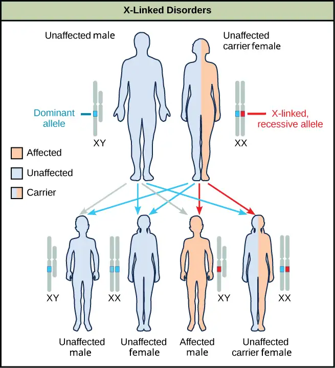
Interactive
Watch this video to learn more about sex-linked traits. sex-linked_trts
Lethality¶
A large proportion of genes in an individual’s genome are essential for survival. Occasionally, a nonfunctional allele for an essential gene can arise by mutation and be transmitted in a population as long as individuals with this allele also have a wild-type, functional copy. The wild-type allele functions at a capacity sufficient to sustain life and is therefore considered to be dominant over the nonfunctional allele. However, consider two heterozygous parents that have a genotype of wild-type/nonfunctional mutant for a hypothetical essential gene. In one quarter of their offspring, we would expect to observe individuals that are homozygous recessive for the nonfunctional allele. Because the gene is essential, these individuals might fail to develop past fertilization, die in utero, or die later in life, depending on what life stage requires this gene. An inheritance pattern in which an allele is only lethal in the homozygous form and in which the heterozygote may be normal or have some altered nonlethal phenotype is referred to as recessive lethal.
For crosses between heterozygous individuals with a recessive lethal allele that causes death before birth when homozygous, only wild-type homozygotes and heterozygotes would be observed. The genotypic ratio would therefore be 2:1. In other instances, the recessive lethal allele might also exhibit a dominant (but not lethal) phenotype in the heterozygote. For instance, the recessive lethal Curly allele in Drosophila affects wing shape in the heterozygote form but is lethal in the homozygote.
A single copy of the wild-type allele is not always sufficient for normal functioning or even survival. The dominant lethal inheritance pattern is one in which an allele is lethal both in the homozygote and the heterozygote; this allele can only be transmitted if the lethality phenotype occurs after reproductive age. Individuals with mutations that result in dominant lethal alleles fail to survive even in the heterozygote form. Dominant lethal alleles are very rare because, as you might expect, the allele only lasts one generation and is not transmitted. However, just as the recessive lethal allele might not immediately manifest the phenotype of death, dominant lethal alleles also might not be expressed until adulthood. Once the individual reaches reproductive age, the allele may be unknowingly passed on, resulting in a delayed death in both generations. An example of this in humans is Huntington’s disease, in which the nervous system gradually wastes away (Figure 12.14). People who are heterozygous for the dominant Huntington allele (Hh) will inevitably develop the fatal disease. However, the onset of Huntington’s disease may not occur until age 40, at which point the afflicted persons may have already passed the allele to 50 percent of their offspring.
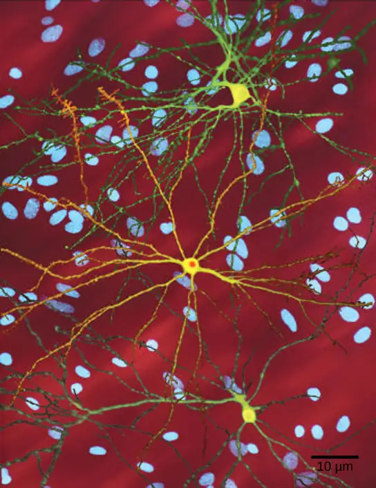
12.3 Laws of Inheritance¶
Learning Objectives
By the end of this section, you will be able to do the following:
- Explain Mendel’s law of segregation and independent assortment in terms of genetics and the events of meiosis
- Use the forked-line method and the probability rules to calculate the probability of genotypes and phenotypes from multiple gene crosses
- Explain the effect of linkage and recombination on gamete genotypes
- Explain the phenotypic outcomes of epistatic effects between genes
Mendel generalized the results of his pea-plant experiments into four postulates, some of which are sometimes called “laws,” that describe the basis of dominant and recessive inheritance in diploid organisms. As you have learned, more complex extensions of Mendelism exist that do not exhibit the same F2 phenotypic ratios (3:1). Nevertheless, these laws summarize the basics of classical genetics.
Pairs of Unit Factors, or Genes¶
Mendel proposed first that paired unit factors of heredity were transmitted faithfully from generation to generation by the dissociation and reassociation of paired factors during gametogenesis and fertilization, respectively. After he crossed peas with contrasting traits and found that the recessive trait resurfaced in the F2 generation, Mendel deduced that hereditary factors must be inherited as discrete units. This finding contradicted the belief at that time that parental traits were blended in the offspring.
Alleles Can Be Dominant or Recessive¶
Mendel’s law of dominance states that in a heterozygote, one trait will conceal the presence of another trait for the same characteristic. Rather than both alleles contributing to a phenotype, the dominant allele will be expressed exclusively. The recessive allele will remain “latent” but will be transmitted to offspring by the same manner in which the dominant allele is transmitted. The recessive trait will only be expressed by offspring that have two copies of this allele (Figure 12.15), and these offspring will breed true when self-crossed.
Since Mendel’s experiments with pea plants, researchers have found that the law of dominance does not always hold true. Instead, several different patterns of inheritance have been found to exist.
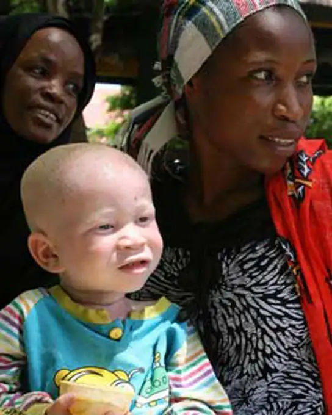
Equal Segregation of Alleles¶
Observing that true-breeding pea plants with contrasting traits gave rise to F1 generations that all expressed the dominant trait and F2 generations that expressed the dominant and recessive traits in a 3:1 ratio, Mendel proposed the law of segregation. This law states that paired unit factors (genes) must segregate equally into gametes such that offspring have an equal likelihood of inheriting either factor. For the F2 generation of a monohybrid cross, the following three possible combinations of genotypes could result: homozygous dominant, heterozygous, or homozygous recessive. Because heterozygotes could arise from two different pathways (receiving one dominant and one recessive allele from either parent), and because heterozygotes and homozygous dominant individuals are phenotypically identical, the law supports Mendel’s observed 3:1 phenotypic ratio. The equal segregation of alleles is the reason we can apply the Punnett square to accurately predict the offspring of parents with known genotypes. The physical basis of Mendel’s law of segregation is the first division of meiosis, in which the homologous chromosomes with their different versions of each gene are segregated into daughter nuclei. The role of the meiotic segregation of chromosomes in sexual reproduction was not understood by the scientific community during Mendel’s lifetime.
Independent Assortment¶
Mendel’s law of independent assortment states that genes do not influence each other with regard to the sorting of alleles into gametes, and every possible combination of alleles for every gene is equally likely to occur. The independent assortment of genes can be illustrated by the dihybrid cross, a cross between two true-breeding parents that express different traits for two characteristics. Consider the characteristics of seed color and seed texture for two pea plants, one that has green, wrinkled seeds (yyrr) and another that has yellow, round seeds (YYRR). Because each parent is homozygous, the law of segregation indicates that the gametes for the green/wrinkled plant all are yr, and the gametes for the yellow/round plant are all YR. Therefore, the F1 generation of offspring all are YyRr (Figure 12.16).
Visual Connection
![This illustration shows a dihybrid cross between pea plants. In the upper case P generation, a plant that has the homozygous dominant phenotype of round, yellow peas is crossed with a plant with the homozygous recessive phenotype of wrinkled, green peas. The resulting F subscript 1 baseline offspring have a heterozygous genotype and round, yellow peas. Self-pollination of the F subscript 1 baseline generation results in F subscript 2 baseline offspring with a phenotypic ratio of 9 colon 3 colon 3 colon 1 for yellow round, green round, yellow wrinkled and green wrinkled peas, respectively.](img/figure-12-03-02-0fc5.webp)
In pea plants, round seed shape (R) is dominant to wrinkled seed shape (r) and yellow peas (Y) are dominant to green peas (y). What are the possible genotypes and phenotypes for a cross between RrYY and rrYy pea plants? How many squares do you need to do a Punnett square analysis of this cross?
For the F2 generation, the law of segregation requires that each gamete receive either an R allele or an r allele along with either a Y allele or a y allele. The law of independent assortment states that a gamete into which an r allele sorted would be equally likely to contain either a Y allele or a y allele. Thus, there are four equally likely gametes that can be formed when the YyRr heterozygote is self-crossed, as follows: YR, Yr, yR, and yr. Arranging these gametes along the top and left of a 4 × 4 Punnett square (Figure 12.16) gives us 16 equally likely genotypic combinations. From these genotypes, we infer a phenotypic ratio of 9 round/yellow:3 round/green:3 wrinkled/yellow:1 wrinkled/green (Figure 12.16). These are the offspring ratios we would expect, assuming we performed the crosses with a large enough sample size.
Because of independent assortment and dominance, the 9:3:3:1 dihybrid phenotypic ratio can be collapsed into two 3:1 ratios, characteristic of any monohybrid cross that follows a dominant and recessive pattern. Ignoring seed color and considering only seed texture in the above dihybrid cross, we would expect that three quarters of the F2 generation offspring would be round, and one quarter would be wrinkled. Similarly, isolating only seed color, we would assume that three quarters of the F2 offspring would be yellow and one quarter would be green. The sorting of alleles for texture and color are independent events, so we can apply the product rule. Therefore, the proportion of round and yellow F2 offspring is expected to be (3/4) × (3/4) = 9/16, and the proportion of wrinkled and green offspring is expected to be (1/4) × (1/4) = 1/16. These proportions are identical to those obtained using a Punnett square. Round, green and wrinkled, yellow offspring can also be calculated using the product rule, as each of these genotypes includes one dominant and one recessive phenotype. Therefore, the proportion of each is calculated as (3/4) × (1/4) = 3/16.
The law of independent assortment also indicates that a cross between yellow, wrinkled (YYrr) and green, round (yyRR) parents would yield the same F1 and F2 offspring as in the YYRR x yyrr cross.
The physical basis for the law of independent assortment also lies in meiosis I, in which the different homologous pairs line up in random orientations. Each gamete can contain any combination of paternal and maternal chromosomes (and therefore the genes on them) because the orientation of tetrads on the metaphase plane is random.
Forked-Line Method¶
When more than two genes are being considered, the Punnett-square method becomes unwieldy. For instance, examining a cross involving four genes would require a 16 × 16 grid containing 256 boxes. It would be extremely cumbersome to manually enter each genotype. For more complex crosses, the forked-line and probability methods are preferred.
To prepare a forked-line diagram for a cross between F1 heterozygotes resulting from a cross between AABBCC and aabbcc parents, we first create rows equal to the number of genes being considered, and then segregate the alleles in each row on forked lines according to the probabilities for individual monohybrid crosses (Figure 12.17). We then multiply the values along each forked path to obtain the F2 offspring probabilities. Note that this process is a diagrammatic version of the product rule. The values along each forked pathway can be multiplied because each gene assorts independently. For a trihybrid cross, the F2 phenotypic ratio is 27:9:9:9:3:3:3:1.
![A forked-line diagram is shown for the F subscript 2 baseline generation of a trihybrid cross of pea plants with the dominant yellow, round, and tall phenotype with pea plants of the recessive green, wrinkled, dwarf phenotype. The top row shows that the color ratio is 3 yellow to 1 green in the F subscript 2 baseline generation. The second row shows that the probability that plants of either pea color having the round or wrinkled texture is 3 to 1. The third row shows that the probability of plants with either of the above textures having a round or wrinkled phenotype is 3 to 1. The probability of all three phenotypes occurring together is determined by multiplying each individual probability together. The probability ratio is 27 yellow slash round slash tall colon; 9 yellow slash round slash dwarf, colon, 9 yellow slash wrinked slash tall, colon, 3 yellow slash wrinkled slash dwarf, colon, 9 green slash round slash tall, colon, 3 green slash round slash dwarf, colon 3 green slash wrinkled slash tall, colon, 1 green slash wrinkled slash dwarf.](img/figure-12-03-03.webp)
Probability Method¶
While the forked-line method is a diagrammatic approach to keeping track of probabilities in a cross, the probability method gives the proportions of offspring expected to exhibit each phenotype (or genotype) without the added visual assistance. Both methods make use of the product rule and consider the alleles for each gene separately. Earlier, we examined the phenotypic proportions for a trihybrid cross using the forked-line method; now we will use the probability method to examine the genotypic proportions for a cross with even more genes.
For a trihybrid cross, writing out the forked-line method is tedious, albeit not as tedious as using the Punnett-square method. To fully demonstrate the power of the probability method, however, we can consider specific genetic calculations. For instance, for a tetrahybrid cross between individuals that are heterozygotes for all four genes, and in which all four genes are sorting independently and in a dominant and recessive pattern, what proportion of the offspring will be expected to be homozygous recessive for all four alleles? Rather than writing out every possible genotype, we can use the probability method. We know that for each gene, the fraction of homozygous recessive offspring will be 1/4. Therefore, multiplying this fraction for each of the four genes, (1/4) × (1/4) × (1/4) × (1/4), we determine that 1/256 of the offspring will be quadruply homozygous recessive.
For the same tetrahybrid cross, what is the expected proportion of offspring that have the dominant phenotype at all four loci? We can answer this question using phenotypic proportions, but let’s do it the hard way—using genotypic proportions. The question asks for the proportion of offspring that are 1) homozygous dominant at A or heterozygous at A, and 2) homozygous at B or heterozygous at B, and so on. Noting the “or” and “and” in each circumstance makes clear where to apply the sum and product rules. The probability of a homozygous dominant at A is 1/4 and the probability of a heterozygote at A is 1/2. The probability of the homozygote or the heterozygote is 1/4 + 1/2 = 3/4 using the sum rule. The same probability can be obtained in the same way for each of the other genes, so that the probability of a dominant phenotype at A and B and C and D is, using the product rule, equal to 3/4 × 3/4 × 3/4 × 3/4, or 81/256. If you are ever unsure about how to combine probabilities, returning to the forked-line method should make it clear.
Rules for Multihybrid Fertilization¶
Predicting the genotypes and phenotypes of offspring from given crosses is the best way to test your knowledge of Mendelian genetics. Given a multihybrid cross that obeys independent assortment and follows a dominant and recessive pattern, several generalized rules exist; you can use these rules to check your results as you work through genetics calculations (Table 12.5). To apply these rules, first you must determine n, the number of heterozygous gene pairs (the number of genes segregating two alleles each). For example, a cross between AaBb and AaBb heterozygotes has an n of 2. In contrast, a cross between AABb and AABb has an n of 1 because A is not heterozygous.
Table 12.5
| General Rules for Multihybrid Crosses | |
|---|---|
| General Rule | Number of Heterozygous Gene Pairs |
| Number of different F1 gametes | 2n |
| Number of different F2 genotypes | 3n |
| Given dominant and recessive inheritance, the number of different F2 phenotypes | 2n |
Linked Genes Violate the Law of Independent Assortment¶
Although all of Mendel’s pea characteristics behaved according to the law of independent assortment, we now know that some allele combinations are not inherited independently of each other. Genes that are located on separate non-homologous chromosomes will always sort independently. However, each chromosome contains hundreds or thousands of genes, organized linearly on chromosomes like beads on a string. The segregation of alleles into gametes can be influenced by linkage, in which genes that are located physically close to each other on the same chromosome are more likely to be inherited as a pair. However, because of the process of recombination, or “crossover,” it is possible for two genes on the same chromosome to behave independently, or as if they are not linked. To understand this, let’s consider the biological basis of gene linkage and recombination.
Homologous chromosomes possess the same genes in the same linear order. The alleles may differ on homologous chromosome pairs, but the genes to which they correspond do not. In preparation for the first division of meiosis, homologous chromosomes replicate and synapse. Like genes on the homologs align with each other. At this stage, segments of homologous chromosomes exchange linear segments of genetic material (Figure 12.18). This process is called recombination, or crossover, and it is a common genetic process. Because the genes are aligned during recombination, the gene order is not altered. Instead, the result of recombination is that maternal and paternal alleles are combined onto the same chromosome. Across a given chromosome, several recombination events may occur, causing extensive shuffling of alleles.
![This illustration shows a pair of homologous chromosomes. One of the pair has the alleles upper case A upper case B upper case C, and the other has the alleles lower case a lower case b lower case c. During meiosis, crossover occurs between two of the chromosomes and genetic material is exchanged, resulting in one recombinant chromosome that has the alleles upper A upper B lower c and another that has the alleles lower a lower b upper C. The other two chromosomes are non-recombinant and have the same arrangement of genes as before meiosis.](img/figure-12-03-04.webp)
When two genes are located in close proximity on the same chromosome, they are considered linked, and their alleles tend to be transmitted through meiosis together. To exemplify this, imagine a dihybrid cross involving flower color and plant height in which the genes are next to each other on the chromosome. If one homologous chromosome has alleles for tall plants and red flowers, and the other chromosome has genes for short plants and yellow flowers, then when the gametes are formed, the tall and red alleles will go together into a gamete and the short and yellow alleles will go into other gametes. These are called the parental genotypes because they have been inherited intact from the parents of the individual producing gametes. But unlike if the genes were on different chromosomes, there will be no gametes with tall and yellow alleles and no gametes with short and red alleles. If you create the Punnett square with these gametes, you will see that the classical Mendelian prediction of a 9:3:3:1 outcome of a dihybrid cross would not apply. As the distance between two genes increases, the probability of one or more crossovers between them increases, and the genes behave more like they are on separate chromosomes. Geneticists have used the proportion of recombinant gametes (the ones not like the parents) as a measure of how far apart genes are on a chromosome. Using this information, they have constructed elaborate maps of genes on chromosomes for well-studied organisms, including humans.
Mendel’s seminal publication makes no mention of linkage, and many researchers have questioned whether he encountered linkage but chose not to publish those crosses out of concern that they would invalidate his independent assortment postulate. The garden pea has seven pairs of chromosomes, and some have suggested that his choice of seven characteristics was not a coincidence. However, even if the genes he examined were not located on separate chromosomes, it is possible that he simply did not observe linkage because of the extensive shuffling effects of recombination.
Scientific Method Connection
Testing the Hypothesis of Independent Assortment
To better appreciate the amount of labor and ingenuity that went into Mendel’s experiments, proceed through one of Mendel’s dihybrid crosses.
Question: What will be the offspring of a dihybrid cross?
Background: Consider that pea plants mature in one growing season, and you have access to a large garden in which you can cultivate thousands of pea plants. There are several true-breeding plants with the following pairs of traits: tall plants with inflated pods, and dwarf plants with constricted pods. Before the plants have matured, you remove the pollen-producing organs from the tall/inflated plants in your crosses to prevent self-fertilization. Upon plant maturation, the plants are manually crossed by transferring pollen from the dwarf/constricted plants to the stigmata of the tall/inflated plants.
Hypothesis: Both trait pairs will sort independently according to Mendelian laws. When the true-breeding parents are crossed, all of the F1 offspring are tall and have inflated pods, which indicates that the tall and inflated traits are dominant over the dwarf and constricted traits, respectively. A self-cross of the F1 heterozygotes results in 2,000 F2 progeny.
Test the hypothesis: Because each trait pair sorts independently, the ratios of tall:dwarf and inflated:constricted are each expected to be 3:1. The tall/dwarf trait pair is called T/t, and the inflated/constricted trait pair is designated I/i. Each member of the F1 generation therefore has a genotype of TtIi. Construct a grid analogous to Figure 12.16, in which you cross two TtIi individuals. Each individual can donate four combinations of two traits: TI, Ti, tI, or ti, meaning that there are 16 possibilities of offspring genotypes. Because the T and I alleles are dominant, any individual having one or two of those alleles will express the tall or inflated phenotypes, respectively, regardless if they also have a t or i allele. Only individuals that are tt or ii will express the dwarf and constricted alleles, respectively. As shown in Figure 12.19, you predict that you will observe the following offspring proportions: tall/inflated:tall/constricted:dwarf/inflated:dwarf/constricted in a 9:3:3:1 ratio. Notice from the grid that when considering the tall/dwarf and inflated/constricted trait pairs in isolation, they are each inherited in 3:1 ratios.
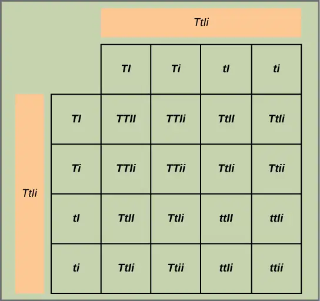
Test the hypothesis: You cross the dwarf and tall plants and then self-cross the offspring. For best results, this is repeated with hundreds or even thousands of pea plants. What special precautions should be taken in the crosses and in growing the plants?
Analyze your data: You observe the following plant phenotypes in the F2 generation: 2706 tall/inflated, 930 tall/constricted, 888 dwarf/inflated, and 300 dwarf/constricted. Reduce these findings to a ratio and determine if they are consistent with Mendelian laws.
Form a conclusion: Were the results close to the expected 9:3:3:1 phenotypic ratio? Do the results support the prediction? What might be observed if far fewer plants were used, given that alleles segregate randomly into gametes? Try to imagine growing that many pea plants, and consider the potential for experimental error. For instance, what would happen if it was extremely windy one day?
Epistasis¶
Mendel’s studies in pea plants implied that the sum of an individual’s phenotype was controlled by genes (or as he called them, unit factors), such that every characteristic was distinctly and completely controlled by a single gene. In fact, single observable characteristics are almost always under the influence of multiple genes (each with two or more alleles) acting in unison. For example, at least eight genes contribute to eye color in humans.
Interactive
Eye color in humans is determined by multiple genes. Use the Eye Color Calculator to predict the eye color of children from parental eye color.
In some cases, several genes can contribute to aspects of a common phenotype without their gene products ever directly interacting. In the case of organ development, for instance, genes may be expressed sequentially, with each gene adding to the complexity and specificity of the organ. Genes may function in complementary or synergistic fashions, such that two or more genes need to be expressed simultaneously to affect a phenotype. Genes may also oppose each other, with one gene modifying the expression of another.
In epistasis, the interaction between genes is antagonistic, such that one gene masks or interferes with the expression of another. “Epistasis” is a word composed of Greek roots that mean “standing upon.” The alleles that are being masked or silenced are said to be hypostatic to the epistatic alleles that are doing the masking. Often the biochemical basis of epistasis is a gene pathway in which the expression of one gene is dependent on the function of a gene that precedes or follows it in the pathway.
An example of epistasis is pigmentation in mice. The wild-type coat color, agouti (AA), is dominant to solid-colored fur (aa). However, a separate gene (C) is necessary for pigment production. A mouse with a recessive c allele at this locus is unable to produce pigment and is albino regardless of the allele present at locus A (Figure 12.20). Therefore, the genotypes AAcc, Aacc, and aacc all produce the same albino phenotype. A cross between heterozygotes for both genes (AaCc x AaCc) would generate offspring with a phenotypic ratio of 9 agouti:3 solid color:4 albino (Figure 12.20). In this case, the C gene is epistatic to the A gene.
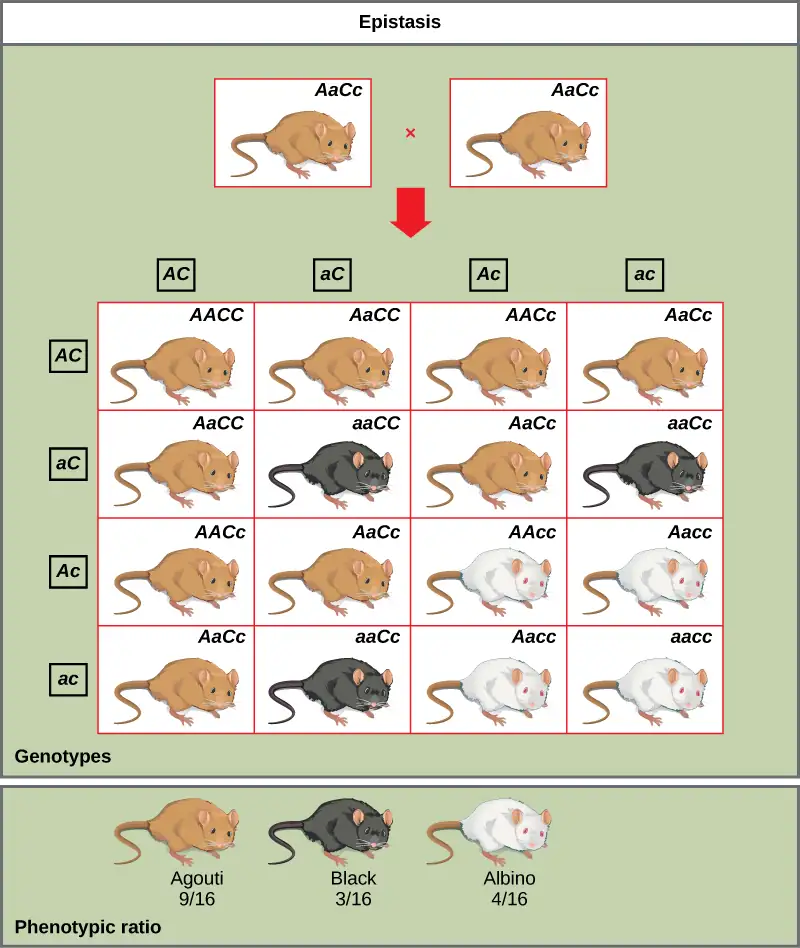
Epistasis can also occur when a dominant allele masks expression at a separate gene. Fruit color in summer squash is expressed in this way. Homozygous recessive expression of the W gene (ww) coupled with homozygous dominant or heterozygous expression of the Y gene (YY or Yy) generates yellow fruit, and the wwyy genotype produces green fruit. However, if a dominant copy of the W gene is present in the homozygous or heterozygous form, the summer squash will produce white fruit regardless of the Y alleles. A cross between white heterozygotes for both genes (WwYy × WwYy) would produce offspring with a phenotypic ratio of 12 white:3 yellow:1 green.
Finally, epistasis can be reciprocal such that either gene, when present in the dominant (or recessive) form, expresses the same phenotype. In the shepherd’s purse plant (Capsella bursa-pastoris), the characteristic of seed shape is controlled by two genes in a dominant epistatic relationship. When the genes A and B are both homozygous recessive (aabb), the seeds are ovoid. If the dominant allele for either of these genes is present, the result is triangular seeds. That is, every possible genotype other than aabb results in triangular seeds, and a cross between heterozygotes for both genes (AaBb x AaBb) would yield offspring with a phenotypic ratio of 15 triangular:1 ovoid.
As you work through genetics problems, keep in mind that any single characteristic that results in a phenotypic ratio that totals 16 is typical of a two-gene interaction. Recall the phenotypic inheritance pattern for Mendel’s dihybrid cross, which considered two noninteracting genes—9:3:3:1. Similarly, we would expect interacting gene pairs to also exhibit ratios expressed as 16 parts. Note that we are assuming the interacting genes are not linked; they are still assorting independently into gametes.
Chapter Review¶
Key Terms¶
- allele
- gene variations that arise by mutation and exist at the same relative locations on homologous chromosomes
- autosomes
- any of the non-sex chromosomes
- blending theory of inheritance
- hypothetical inheritance pattern in which parental traits are blended together in the offspring to produce an intermediate physical appearance
- codominance
- in a heterozygote, complete and simultaneous expression of both alleles for the same characteristic
- continuous variation
- inheritance pattern in which a character shows a range of trait values with small gradations rather than large gaps between them
- dihybrid
- result of a cross between two true-breeding parents that express different traits for two characteristics
- discontinuous variation
- inheritance pattern in which traits are distinct and are transmitted independently of one another
- dominant
- trait which confers the same physical appearance whether an individual has two copies of the trait or one copy of the dominant trait and one copy of the recessive trait
- dominant lethal
- inheritance pattern in which an allele is lethal both in the homozygote and the heterozygote; this allele can only be transmitted if the lethality phenotype occurs after reproductive age
- epistasis
- antagonistic interaction between genes such that one gene masks or interferes with the expression of another
- F1
- first filial generation in a cross; the offspring of the parental generation
- F2
- second filial generation produced when F1 individuals are self-crossed or fertilized with each other
- genotype
- underlying genetic makeup, consisting of both physically visible and non-expressed alleles, of an organism
- hemizygous
- presence of only one allele for a characteristic, as in X-linkage; hemizygosity makes descriptions of dominance and recessiveness irrelevant
- heterozygous
- having two different alleles for a given gene on the homologous chromosome
- homozygous
- having two identical alleles for a given gene on the homologous chromosome
- hybridization
- process of mating two individuals that differ with the goal of achieving a certain characteristic in their offspring
- incomplete dominance
- in a heterozygote, expression of two contrasting alleles such that the individual displays an intermediate phenotype
- law of dominance
- in a heterozygote, one trait will conceal the presence of another trait for the same characteristic
- law of independent assortment
- genes do not influence each other with regard to sorting of alleles into gametes; every possible combination of alleles is equally likely to occur
- law of segregation
- paired unit factors (i.e., genes) segregate equally into gametes such that offspring have an equal likelihood of inheriting any combination of factors
- linkage
- phenomenon in which alleles that are located in close proximity to each other on the same chromosome are more likely to be inherited together
- model system
- species or biological system used to study a specific biological phenomenon to be applied to other different species
- monohybrid
- result of a cross between two true-breeding parents that express different traits for only one characteristic
- P0
- parental generation in a cross
- phenotype
- observable traits expressed by an organism
- product rule
- probability of two independent events occurring simultaneously can be calculated by multiplying the individual probabilities of each event occurring alone
- Punnett square
- visual representation of a cross between two individuals in which the gametes of each individual are denoted along the top and side of a grid, respectively, and the possible zygotic genotypes are recombined at each box in the grid
- recessive
- trait that appears “latent” or non-expressed when the individual also carries a dominant trait for that same characteristic; when present as two identical copies, the recessive trait is expressed
- recessive lethal
- inheritance pattern in which an allele is only lethal in the homozygous form; the heterozygote may be normal or have some altered, nonlethal phenotype
- reciprocal cross
- paired cross in which the respective traits of the male and female in one cross become the respective traits of the female and male in the other cross
- sex-linked
- any gene on a sex chromosome
- sum rule
- probability of the occurrence of at least one of two mutually exclusive events is the sum of their individual probabilities
- test cross
- cross between a dominant expressing individual with an unknown genotype and a homozygous recessive individual; the offspring phenotypes indicate whether the unknown parent is heterozygous or homozygous for the dominant trait
- trait
- variation in the physical appearance of a heritable characteristic
- X-linked
- gene present on the X, but not the Y chromosome
Summary¶
12.1 Mendel’s Experiments and the Laws of Probability¶
Working with garden pea plants, Mendel found that crosses between parents that differed by one trait produced F1 offspring that all expressed the traits of one parent. Observable traits are referred to as dominant, and non-expressed traits are described as recessive. When the offspring in Mendel’s experiment were self-crossed, the F2 offspring exhibited the dominant trait or the recessive trait in a 3:1 ratio, confirming that the recessive trait had been transmitted faithfully from the original P0 parent. Reciprocal crosses generated identical F1 and F2 offspring ratios. By examining sample sizes, Mendel showed that his crosses behaved reproducibly according to the laws of probability, and that the traits were inherited as independent events.
Two rules in probability can be used to find the expected proportions of offspring of different traits from different crosses. To find the probability of two or more independent events occurring together, apply the product rule and multiply the probabilities of the individual events. The use of the word “and” suggests the appropriate application of the product rule. To find the probability of two or more events occurring in combination, apply the sum rule and add their individual probabilities together. The use of the word “or” suggests the appropriate application of the sum rule.
12.2 Characteristics and Traits¶
When true-breeding or homozygous individuals that differ for a certain trait are crossed, all of the offspring will be heterozygotes for that trait. If the traits are inherited as dominant and recessive, the F1 offspring will all exhibit the same phenotype as the parent homozygous for the dominant trait. If these heterozygous offspring are self-crossed, the resulting F2 offspring will be equally likely to inherit gametes carrying the dominant or recessive trait, giving rise to offspring of which one quarter are homozygous dominant, half are heterozygous, and one quarter are homozygous recessive. Because homozygous dominant and heterozygous individuals are phenotypically identical, the observed traits in the F2 offspring will exhibit a ratio of three dominant to one recessive.
Alleles do not always behave in dominant and recessive patterns. Incomplete dominance describes situations in which the heterozygote exhibits a phenotype that is intermediate between the homozygous phenotypes. Codominance describes the simultaneous expression of both of the alleles in the heterozygote. Although diploid organisms can only have two alleles for any given gene, it is common for more than two alleles of a gene to exist in a population. In humans, as in many animals and some plants, females have two X chromosomes and males have one X and one Y chromosome. Genes that are present on the X but not the Y chromosome are said to be X-linked, such that males only inherit one allele for the gene, and females inherit two. Finally, some alleles can be lethal. Recessive lethal alleles are only lethal in homozygotes, but dominant lethal alleles are fatal in heterozygotes as well.
12.3 Laws of Inheritance¶
Mendel postulated that genes (characteristics) are inherited as pairs of alleles (traits) that behave in a dominant and recessive pattern. Alleles segregate into gametes such that each gamete is equally likely to receive either one of the two alleles present in a diploid individual. In addition, genes are assorted into gametes independently of one another. That is, alleles are generally not more likely to segregate into a gamete with a particular allele of another gene. A dihybrid cross demonstrates independent assortment when the genes in question are on different chromosomes or distant from each other on the same chromosome. For crosses involving more than two genes, use the forked line or probability methods to predict offspring genotypes and phenotypes rather than a Punnett square.
Although chromosomes sort independently into gametes during meiosis, Mendel’s law of independent assortment refers to genes, not chromosomes, and a single chromosome may carry more than 1,000 genes. When genes are located in close proximity on the same chromosome, their alleles tend to be inherited together. This results in offspring ratios that violate Mendel's law of independent assortment. However, recombination serves to exchange genetic material on homologous chromosomes such that maternal and paternal alleles may be recombined on the same chromosome. This is why alleles on a given chromosome are not always inherited together. Recombination is a random event occurring anywhere on a chromosome. Therefore, genes that are far apart on the same chromosome are likely to still assort independently because of recombination events that occurred in the intervening chromosomal space.
Whether or not they are sorting independently, genes may interact at the level of gene products such that the expression of an allele for one gene masks or modifies the expression of an allele for a different gene. This is called epistasis.
Review Questions¶
12.1 Mendel’s Experiments and the Laws of Probability¶
1. Mendel performed hybridizations by transferring pollen from the _______ of the male plant to the female ova.
- anther
- pistil
- stigma
- seed
Answer
A
2. Which is one of the seven characteristics that Mendel observed in pea plants?
- flower size
- seed texture
- leaf shape
- stem color
Answer
B
3. Imagine you are performing a cross involving seed color in garden pea plants. What F1 offspring would you expect if you cross true-breeding parents with green seeds and yellow seeds? Yellow seed color is dominant over green.
- 100 percent yellow-green seeds
- 100 percent yellow seeds
- 50 percent yellow, 50 percent green seeds
- 25 percent green, 75 percent yellow seeds
Answer
B
4. Consider a cross to investigate the pea pod texture trait, involving constricted or inflated pods. Mendel found that the traits behave according to a dominant/recessive pattern in which inflated pods were dominant. If you performed this cross and obtained 650 inflated-pod plants in the F2 generation, approximately how many constricted-pod plants would you expect to have?
- 600
- 165
- 217
- 468
Answer
C
5. A scientist pollinates a true-breeding pea plant with violet, terminal flowers with pollen from a true-breeding pea plant with white, axial flowers. Which of the following observations would most accurately describe the F2 generation?
- 75% violet flowers; 75% terminal flowers
- 75% white flowers in a terminal position
- 75% violet flowers; 75% axial flowers
- 75% violet flowers in an axial position
Answer
C
12.2 Characteristics and Traits¶
6. The observable traits expressed by an organism are described as its ________.
- phenotype
- genotype
- alleles
- zygote
Answer
A
7. A recessive trait will be observed in individuals that are ________ for that trait.
- heterozygous
- homozygous or heterozygous
- homozygous
- diploid
Answer
C
8. If black and white true-breeding mice are mated and the result is all gray offspring, what inheritance pattern would this be indicative of?
- dominance
- codominance
- multiple alleles
- incomplete dominance
Answer
D
9. The ABO blood groups in humans are expressed as the IA, IB, and i alleles. The IA allele encodes the A blood group antigen, IB encodes B, and i encodes O. Both A and B are dominant to O. If a heterozygous blood type A parent (IAi) and a heterozygous blood type B parent (IBi) mate, one quarter of their offspring will have AB blood type (IAIB) in which both antigens are expressed equally. Therefore, ABO blood groups are an example of:
- multiple alleles and incomplete dominance
- codominance and incomplete dominance
- incomplete dominance only
- multiple alleles and codominance
Answer
D
10. In a mating between two individuals that are heterozygous for a recessive lethal allele that is expressed in utero, what genotypic ratio (homozygous dominant:heterozygous:homozygous recessive) would you expect to observe in the offspring?
- 1:2:1
- 3:1:1
- 1:2:0
- 0:2:1
Answer
C
11. If the allele encoding polydactyly (six fingers) is dominant why do most people have five fingers?
- Genetic elements suppress the polydactyl gene.
- Polydactyly is embryonic lethal.
- The sixth finger is removed at birth.
- The polydactyl allele is very rare in the human population.
Answer
D
12. A farmer raises black and white chickens. To his surprise, when the first generation of eggs hatch all the chickens are black with white speckles throughout their feathers. What should the farmer expect when the eggs laid after interbreeding the speckled chickens hatch?
- All the offspring will be speckled.
- 75% of the offspring will be speckled, and 25% will be black.
- 50% of the offspring will be speckled, 25% will be black, and 25% will be white.
- 50% of the offspring will be black and 50% of the offspring will be white.
Answer
C
12.3 Laws of Inheritance¶
13. Assuming no gene linkage, in a dihybrid cross of AABB x aabb with AaBb F1 heterozygotes, what is the ratio of the F1 gametes (AB, aB, Ab, ab) that will give rise to the F2 offspring?
- 1:1:1:1
- 1:3:3:1
- 1:2:2:1
- 4:3:2:1
Answer
A
14. The forked line and probability methods make use of what probability rule?
- test cross
- product rule
- monohybrid rule
- sum rule
Answer
B
15. How many different offspring genotypes are expected in a trihybrid cross between parents heterozygous for all three traits when the traits behave in a dominant and recessive pattern? How many phenotypes?
- 64 genotypes; 16 phenotypes
- 16 genotypes; 64 phenotypes
- 8 genotypes; 27 phenotypes
- 27 genotypes; 8 phenotypes
Answer
D
16. Labrador retrievers’ fur color is controlled by two alleles, E and B. Any dog with the ee__ genotype develops into a yellow lab, while B_E_ dogs become black labs and bbE_ dogs become chocolate labs. This is an example of _____.
- epistasis
- codominance
- incomplete dominance
- linkage
Answer
A
17. Which of the following situations does not follow the Law of Independent Assortment?
- A blond person and a brown-haired person produce three offspring over time, all of who have blond hair.
- A white cow crossed with a brown bull produces roan cattle.
- Mating a hog with a sow produces six female piglets.
- Men are more likely to experience hemophilia than women.
Answer
D
Critical Thinking Questions¶
12.1 Mendel’s Experiments and the Laws of Probability¶
18. Describe one of the reasons why the garden pea was an excellent choice of model system for studying inheritance.
Answer
The garden pea is sessile and has flowers that close tightly during self-pollination. These features help to prevent accidental or unintentional fertilizations that could have diminished the accuracy of Mendel’s data.
19. How would you perform a reciprocal cross for the characteristic of stem height in the garden pea?
Answer
Two sets of P0 parents would be used. In the first cross, pollen would be transferred from a true-breeding tall plant to the stigma of a true-breeding dwarf plant. In the second cross, pollen would be transferred from a true-breeding dwarf plant to the stigma of a true-breeding tall plant. For each cross, F1 and F2 offspring would be analyzed to determine if offspring traits were affected according to which parent donated each trait.
20. Mendel performs a cross using a true-breeding pea plant with round, yellow seeds and a true-breeding pea plant with green, wrinkled seeds. What is the probability that offspring will have green, round seeds? Calculate the probability for the F1 and F2 generations.
Answer
Since we are calculating the probability of two independent events occurring simultaneously, we use the product rule.
F1 generation: Since green seed color is recessive, there is a 0% probability that any plants in the F1 generation will have green, round seeds.
F2 generation: The probability of growing an F2 generation plant with green seeds is ¼, while the probability of growing an F2 generation plant with round seeds is ¾. We can use the product rule to then calculate the probability of a plant with green, round seeds:
21. Calculate the probability of selecting a heart or a face card when heart suit face cards are excluded from a standard deck of cards. Is this outcome more or less likely than selecting a heart suit face card from a standard deck of cards?
Answer
A standard deck of cards contains 52 cards, 13 of which are hearts and 12 of which are face cards.
Heart suit or face card: This calculation requires the sum rule since there are multiple pathways to successfully pulling a desired card.
The probability of selecting a heart suit or a face card is significantly more likely than the probability of selecting a heart suit face card (\(3/52=5.8\%\)).
12.2 Characteristics and Traits¶
22. The gene for flower position in pea plants exists as axial or terminal alleles. Given that axial is dominant to terminal, list all of the possible F1 and F2 genotypes and phenotypes from a cross involving parents that are homozygous for each trait. Express genotypes with conventional genetic abbreviations.
Answer
Because axial is dominant, the gene would be designated as A. F1 would be all heterozygous Aa with axial phenotype. F2 would have possible genotypes of AA, Aa, and aa; these would correspond to axial, axial, and terminal phenotypes, respectively.
23. Use a Punnett square to predict the offspring in a cross between a dwarf pea plant (homozygous recessive) and a tall pea plant (heterozygous). What is the phenotypic ratio of the offspring?
Answer
The Punnett square would be 2 × 2 and will have T and T along the top, and T and t along the left side. Clockwise from the top left, the genotypes listed within the boxes will be Tt, Tt, tt, and tt. The phenotypic ratio will be 1 tall:1 dwarf.
24. Can a human male be a carrier of red-green color blindness?
Answer
No, males can only express color blindness. They cannot carry it because an individual needs two X chromosomes to be a carrier.
25. Why is it more efficient to perform a test cross with a homozygous recessive donor than a homozygous dominant donor? How could the same information still be found with a homozygous dominant donor?
Answer
Using a homozygous recessive donor is more efficient because the genotype of the unknown parent can be determined in a single generation. If a homozygous dominant donor was used, the unknown genotype could still be determined. Instead of knowing the unknown genotype through the F1 phenotype, the F1 offspring would have to be self-crossed (as Mendel allowed his pea plants to self-pollinate) and the F2 generation phenotypes would be used to determine the unknown F0 genotype.
12.3 Laws of Inheritance¶
26. Use the probability method to calculate the genotypes and genotypic proportions of a cross between AABBCc and Aabbcc parents.
Answer
Considering each gene separately, the cross at A will produce offspring of which half are AA and half are Aa; B will produce all Bb; C will produce half Cc and half cc. Proportions then are (1/2) × (1) × (1/2), or 1/4 AABbCc; continuing for the other possibilities yields 1/4 AABbcc, 1/4 AaBbCc, and 1/4 AaBbcc. The proportions therefore are 1:1:1:1.
27. Explain epistasis in terms of its Greek-language roots “standing upon.”
Answer
Epistasis describes an antagonistic interaction between genes wherein one gene masks or interferes with the expression of another. The gene that is interfering is referred to as epistatic, as if it is “standing upon” the other (hypostatic) gene to block its expression.
28. In Section 12.3, “Laws of Inheritance,” an example of epistasis was given for the summer squash. Cross white WwYy heterozygotes to prove the phenotypic ratio of 12 white:3 yellow:1 green that was given in the text.
Answer
The cross can be represented as a 4 × 4 Punnett square, with the following gametes for each parent: WY, Wy, wY, and wy. For all 12 of the offspring that express a dominant W gene, the offspring will be white. The three offspring that are homozygous recessive for w but express a dominant Y gene will be yellow. The remaining wwyy offspring will be green.
29. People with trisomy 21 develop Down’s syndrome. What law of Mendelian inheritance is violated in this disease? What is the most likely way this occurs?
Answer
In any trisomy disorder, a patient inherits 3 copies of a chromosome instead of the normal pair. This violates the Law of Segregation, and usually occurs when the chromosomes fail to separate during the first round of meiosis.
30. A heterozygous pea plant produces violet flowers and yellow, round seeds. Describe the expected genotypes of the gametes produced by Mendelian inheritance. If all three genes are found on the same arm of one chromosome should a scientist predict that inheritance patterns will follow Mendelian genetics?
Answer
Mendelian inheritance would predict that all three genes are inherited independently. There are therefore 8 different gamete genotype possibilities: VYR, VYr, VyR, Vyr, vYR, vYr, vyR, vyr. If all three genes are found on the same chromosome arm, independent assortment is unlikely to occur because the genes are close together (linked).
Visual Connection Questions¶
12.2 Characteristics and Traits¶
31. Figure 12.5 In pea plants, round peas (R) are dominant to wrinkled peas (r). You do a test cross between a pea plant with wrinkled peas (genotype rr) and a plant of unknown genotype that has round peas. You end up with three plants, all which have round peas. From this data, can you tell if the round pea parent plant is homozygous dominant or heterozygous? If the round pea parent plant is heterozygous, what is the probability that a random sample of 3 progeny peas will all be round?
Answer
Figure 12.5 You cannot be sure if the plant is homozygous or heterozygous as the data set is too small: by random chance, all three plants might have acquired only the dominant gene even if the recessive one is present. If the round pea parent is heterozygous, there is a one-eighth probability that a random sample of three progeny peas will all be round.
32. Figure 12.6 What are the genotypes of the individuals labeled 1, 2, and 3?
Answer
Figure 12.6 Individual 1 has the genotype aa. Individual 2 has the genotype Aa. Individual 3 has the genotype Aa.
33. Figure 12.12 What ratio of offspring would result from a cross between a white-eyed male and a female that is heterozygous for red eye color?
Answer
Figure 12.12 Half of the female offspring would be heterozygous (XWXw) with red eyes, and half would be homozygous recessive (XwXw) with white eyes. Half of the male offspring would be hemizygous dominant (XWY) withe red yes, and half would be hemizygous recessive (XwY) with white eyes.
12.3 Laws of Inheritance¶
34. Figure 12.16 In pea plants, round seed shape (R) is dominant to wrinkled seed shape (r) and yellow peas (Y) are dominant to green peas (y). What are the possible genotypes and phenotypes for a cross between RrYY and rrYy pea plants? How many squares do you need to do a Punnett square analysis of this cross?
Answer
Figure 12.16 The possible genotypes are PpYY, PpYy, ppYY, and ppYy. The former two genotypes would result in plants with purple flowers and yellow peas, while the latter two genotypes would result in plants with white flowers with yellow peas, for a 1:1 ratio of each phenotype. You only need a 2 × 2 Punnett square (four squares total) to do this analysis because two of the alleles are homozygous.
Adapted from Biology 2e by OpenStax, licensed under CC BY 4.0. Access the original for free at openstax.org. Changes: converted to the web reading format of The Open Book Project.
-
Johann Gregor Mendel, Versuche über Pflanzenhybriden Verhandlungen des naturforschenden Vereines in Brünn, Bd. IV für das Jahr, 1865 Abhandlungen, 3–47. [for English translation see http://www.mendelweb.org/Mendel.plain.html] ↩
-
Sumiti Vinayak, et al., “Origin and Evolution of Sulfadoxine Resistant Plasmodium falciparum,” Public Library of Science Pathogens 6, no. 3 (2010): e1000830, doi:10.1371/journal.ppat.1000830. ↩